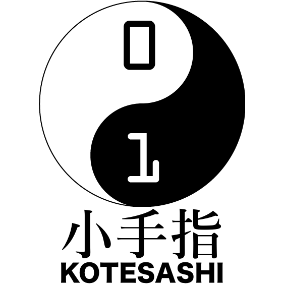

ホーム
CoderDojo
小手指Dojo
開催予定
お問い合わせ

CoderDojo 小手指 @ Do it
子どものためのプログラミング道場
第１回開催予定
2017年4月29日(土) 14:00〜16:00
CoderDojo
CoderDojo とは、子どものために無料で開かれているプログラミング道場です。
2011年にアイルランドで始まり、世界70か国・1200の道場があります（2017年1月現在）。
日本では2012年に東京・下北沢で初めて開催され、その後全国各地に道場が開かれています。
CoderDojo.com(英語)
CoderDojo Japan
詳細は下のガイダンスをご覧ください。（スライドが見えない場合は
コチラ
）
CoderDojoガイダンス（最新版）
from
K. Toga.
CoderDojo 小手指 @ Do it について
CoderDojo 小手指 @ Do it （以下 CoderDojo 小手指）は、埼玉県所沢市小手指地区で開催されている CoderDojo です。
主に「
Do it プログラミング＆英会話スクール
」（以下 Do it）様の教室をお借りして、月一回のペースで開催予定です。
ご注意
CoderDojo 小手指の運営に Do it 様は関わっておりません。
CoderDojo 小手指について、Do it 様にお問い合わせすることはお止めくださいますよう、お願い致します。
運営方針
CoderDojo 小手指では、テキストやカリキュラム等は用意しておりません。
ニンジャ（CoderDojo にプログラミングしに来ている子どもたち）は自分で何を作るか考え、実践していきます。
何か困ったことがあれば、チャンピオン（主催者）やメンター（手助けしてくれる人）がフォローに入ります。
内容
CoderDojo 小手指では、主に
Scratch
を扱っています。
Scratch は、マウスでブロックを組み合わせるだけで簡単にゲームが作れてしまう、プログラミング環境です。
Scratch はパソコンのWebブラウザ(Internet Exproler、Edge、Google Chrome等)も動作しますが、Wi-Fi 接続のトラブルを避けるため、 CoderDojo 小手指では
Scratch 2 Offline Editor
をインストールしておくことをお勧めします。
参加方法
申し込みフォーム
よりお申し込みください。
参加費用は無料です。
CoderDojo 小手指ではパソコンの貸出はしておりません。
必ずノートPCをご持参ください。
また、小学生（特に低学年）のニンジャについては、できる限り保護者の方の付き添いをお願いします。
もし買い物などで外出される場合は、お近くの運営スタッフに一声おかけ下さい。
開催場所
「Do it プログラミング＆英会話スクール」
住所 : 埼玉県所沢市小手指町4-5-12
施設に駐車場はありません。
もしお車でお越しの際は、お近くのコインパーキングをご利用下さい。
メンター・運営スタッフ募集
CoderDojo 小手指 @ Do it では、メンターになって頂ける方を募集中です。
Scratch に詳しかったり、プログラミングスキルがあるに越したことはないですが、無くても大丈夫！
ニンジャたちと一緒に、悩み、考え、喜んで頂ける方であればOKです！
また、受付・写真撮影・開催レポート作成等をお手伝い頂ける運営スタッフも募集中です。
やってみたいという方はもちろん、とりあえずどんな感じなのか見学してから考えたいという方も、ぜひ
お問い合わせ
ください。
主催者
原木 正志（はらき まさし）
1974年東京生まれ、埼玉県川口市育ち、所沢市在住のフリーランスプログラマ。
主にゲーム・組込みを中心に、20年以上プログラマとして活動しています。
mashsoft.jp (仕事関係)
haraki.jp (個人サイト)
開催予定
第１回
2017年4月29日(土) 14:00〜16:00
参加ご希望の方は、下のボタンをクリック（またはタップ）して、申し込みフォームよりお申込み下さい。
参加を申し込む！
なおスペースの都合上、参加人数は10名程度までとさせて頂いておりますので、ご了承ください。
お問い合わせ
CoderDojo 小手指に関するお問い合わせは、メール・Facebook・Twitterでお願い致します。
見学希望の方も、こちらからお申し込みください。
coderdojokotesashi@gmail.com
facebook/coderdojokotesashi
@coderdojo_kote